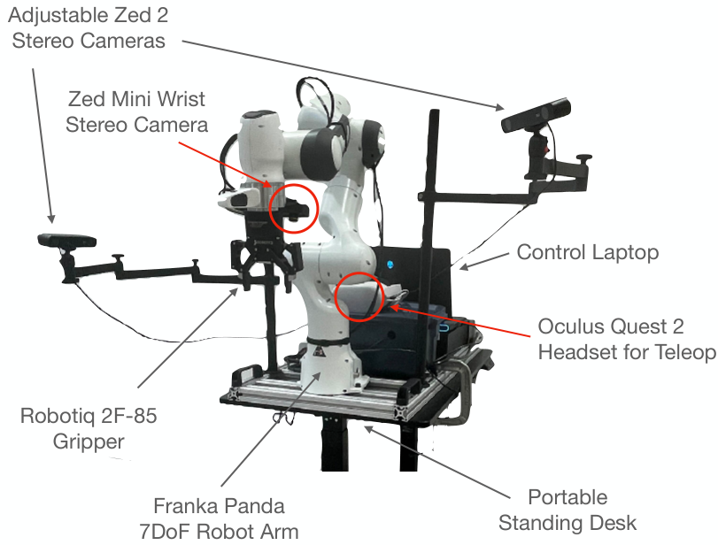
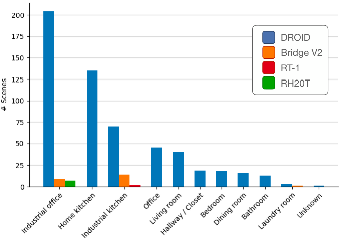
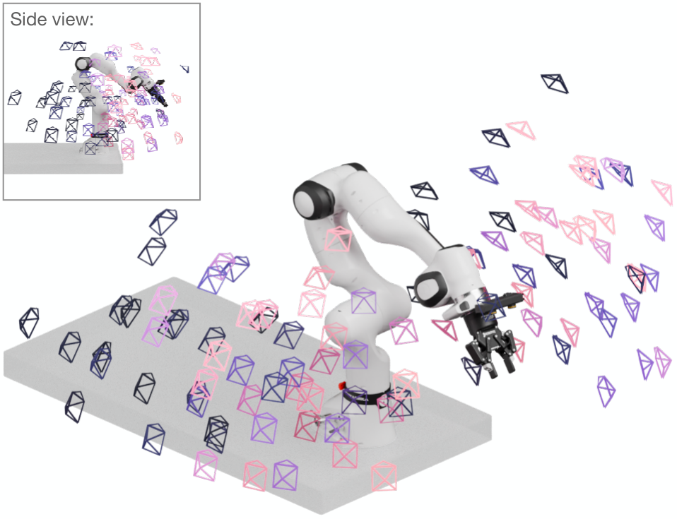
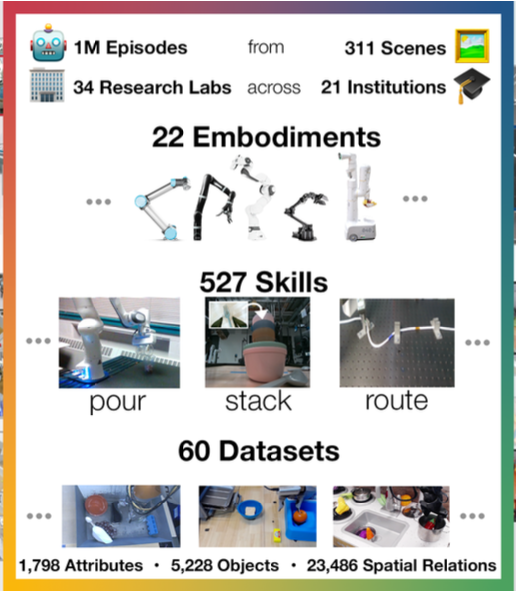
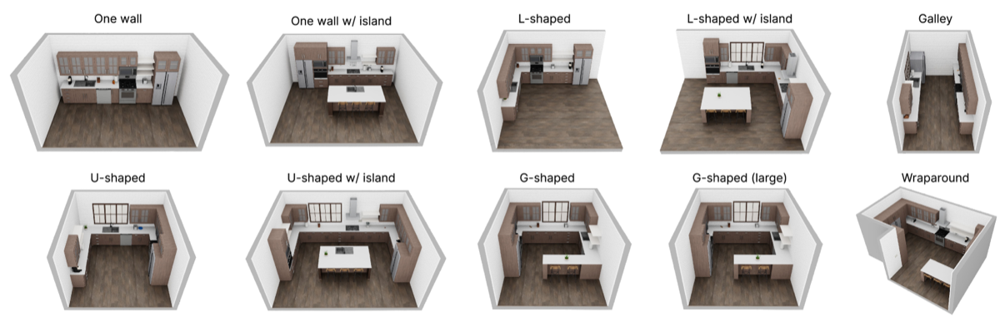

Executive Summary
The data that teaches robots is scattered across six lineages, but in practice the exit funnels down to one. DROID gathered demonstrations from thirteen universities using an identical robot arm. Open X-Embodiment poured the logs of twenty-two different robots into a single pool. RoboCasa and MimicGen inflated a few hundred human demonstrations into tens of thousands using a physics engine, and GR00T stamps out trajectories at industrial scale inside a simulator. These datasets differ in collection method, scale, and license, yet at the distribution stage nearly all of them are repackaged into HuggingFace's LeRobot format and fed to the same loader. This report puts the six on one screen and compares them by scale, license, and format.
Once that convergence is done, the real gap comes into view. Not one of the six treats certain records as first-class data: the ledger of contact force when a robot grips an object, the lineage of which seed and lighting a synthetic trajectory was born from, or a hash to verify physical consistency. The output frames are captured in abundance, but the evidence for how those frames were made and whether they are physically valid, the provenance, is thrown away. The history of demonstrations that failed and were discarded is never recorded at all.
After a generation ruled by the race for scale, the next axis of competition is shifting from "how much" to "can you prove it." That gap is where Pebblous sits. We plug straight into the industry standard by using the same LeRobot format, then differentiate by shipping the proof alongside the data.
6 datasets → 1 format
Six collection paths, one LeRobot distribution
2 real-robot + 4 sim → same loader
~345K
GR00T X-Embodiment-Sim trajectories
1.91TB · largest simulated synthetic set
250x
MimicGen amplification factor
~200 human demos → 50K+ trajectories
4 axes unrecorded
Shared provenance gap across all six
Force · lineage · physics hash · failure log
Six Datasets on One Screen
Public robot-training data splits into two broad camps. One is real-robot teleoperation, where people drive an actual robot and log what happens. The other is synthetic, where a few demonstrations are amplified or trajectories are mass-produced inside a simulator. DROID and Open X-Embodiment sit in the first camp; GR00T, RoboCasa, MimicGen, and LIBERO in the second. Scale ranges widely, from DROID's 76,000 trajectories to Open X-Embodiment's one million and GR00T's roughly 345,000, and licenses run the gamut from commercially usable CC-BY 4.0 to non-commercial-only terms.
Put all six in one table, though, and the last column reveals a paradox. Collection method, scale, and license all differ, yet the distribution format converges without exception on HuggingFace's LeRobot. That is the axis of this report. The data fragmented, but the format has already standardized, and the next story is what still sits empty on top of that standard.
| Dataset | Trajectories | Lead org | Collection | License | arXiv | LeRobot redistribution |
|---|---|---|---|---|---|---|
| DROID | 76k / 350h | 13-university consortium | Real-robot teleop | Data CC-BY 4.0 / code Apache-2.0 | 2403.12945 | ✓ droid_lerobot (92,233ep) |
| Open X-Embodiment | 1M+ | Google DeepMind + many labs | Real-robot (60-dataset RLDS pool) | Varies by subset | 2310.08864 | ✓ OpenX-LeRobot (31 subsets) |
| GR00T (PhysicalAI-Robotics) | ~345K / 1.91TB | NVIDIA | Sim synthetic (Isaac Sim) | X-Emb-Sim CC-BY 4.0 / Teleop-Sim CC-BY-NC 4.0 | GR00T N1 report | ✓ LeRobot-compatible format |
| RoboCasa (2024) | 100,000 (MimicGen-amplified) | UT Austin + NVIDIA | Sim (RoboSuite/MuJoCo) | Apache-2.0 (code) | 2406.02523 | ✓ robocasa_*_lerobot |
| MimicGen | ~200 → 50K+ / 18 tasks | NVIDIA (Seattle Robotics Lab) | Sim amplification (RoboSuite/MuJoCo) | NVIDIA Source Code License | 2310.17596 | ✓ (via RoboCasa) |
| LIBERO (benchmark) | 130 tasks / 50 demos each | UT Austin et al. | Sim benchmark (RoboSuite) | MIT | 2306.03310 | ✓ lerobot/libero |
Master comparison of the six. Trajectory count, lead org, and collection method diverge, but the last column (LeRobot redistribution) is common to all six.
※ RoboCasa365 (2026) is a separate paper — arXiv:2603.04356 (ICLR 2026), 365 tasks across 2,500+ scenes / 60 kitchen activities. Do not conflate it with the original RoboCasa (2406.02523).
No single criterion sorts these six. Collection method (real robot vs. sim), scale (76K to over a million), and license (commercial vs. non-commercial) each draw a different map. But the final step of actually pulling the data into a pipeline, the distribution format, lands all six on the same coordinate. Why that convergence happened, and what still sits empty on top of it, are the two questions this report chases.
DROID: Standardized Hardware for Real Robots
Robot data collected by different labs usually cannot be compared. The arms differ, the cameras sit in different places, the grippers vary. DROID (arXiv:2403.12945, RSS 2024) solved this by standardizing the hardware. Thirteen institutions, Stanford, UC Berkeley, and UT Austin among them, used the identical setup (a Franka Panda 7-DoF arm with a Robotiq 2F-85 gripper and Oculus Quest 2 teleop) to collect 76,000 trajectories and 350 hours of data over twelve months. That spans 86 task categories, 564 scenes, and 50 collectors. Because the hardware was unified, data from all thirteen institutions was mutually comparable from the start.
Below is DROID's standard collection setup. Every institution uses the same arm and teleop rig.

DROID standard hardware setup. Franka Panda 7-DoF + Robotiq 2F-85 gripper + ZED stereo cameras + Oculus Quest 2 teleop. Source: DROID (Khazatsky et al. 2024, CC-BY 4.0)
Standardization did not come at the cost of diversity. DROID's 564 scenes are not a corner of a lab; they spread across real offices, kitchens, and hallways, genuinely in-the-wild. The distribution below shows that environmental variety was preserved even with the hardware held fixed.

DROID 564-scene distribution — in-the-wild diversity. Source: DROID (Khazatsky et al. 2024, CC-BY 4.0)
The camera rig is dense too. Two external ZED 2 stereo cameras and one wrist-mounted ZED Mini together yield 1,417 calibrated camera viewpoints across the dataset. More viewpoints means the same motion can be learned from many angles.

DROID camera viewpoint / calibration distribution — 1,417 in total. Source: DROID (Khazatsky et al. 2024, CC-BY 4.0)
DROID captures RGB video, depth (stereo), joint and gripper state, and language instructions. As real-robot data, it holds nearly every modality it could. And yet even here a cell sits empty. There is no log of the contact force on the gripper when the robot grips an object, and no proof that lets you verify after the fact whether each trajectory is physically valid. This gap is not DROID's alone; it is shared by all six datasets, and Section 9 takes it head-on.
Open X-Embodiment: Many Robots, One Format
Where DROID unified the hardware to gain homogeneity, Open X-Embodiment (arXiv:2310.08864) took the opposite road. Led by Google DeepMind, it pooled 60 datasets already scattered across 34 labs into a single format, RLDS. The result bundled the records of 22 different robots (more than a million trajectories, 527 skills) into a form a single model could learn from. It was the first demonstration of how powerfully one standard format can unify heterogeneous data.
The mosaic below shows 22 embodiments and 60 datasets bound into one. Records as varied as robot arms and mobile robots all enter the same training pipeline.

Open X-Embodiment — a unified mosaic of 22 embodiments × 60 datasets. Source: Open X-Embodiment (Collaboration 2023, CC-BY 4.0)
The payoff showed up in model performance. Trained on the same pooled data, RT-1-X scored 50% higher on in-domain tasks than the original model, and the larger RT-2-X showed roughly three times as many emergent skills. Generalization that no single robot dataset produced appeared once 22 were learned together. Simply binding heterogeneous data into one format made the model learn more broadly.
The lesson Open X-Embodiment left is plain. Binding scattered data into one format matters as much as collecting more of it. That unifying force foreshadowed the later convergence on the LeRobot format at the distribution stage. This dataset showed first that different data can only be used together once it attaches to the same loader.
The Common Denominator: Everything Converges on LeRobot
The datasets seen so far were born in different formats. DROID was built on RLDS (TFDS), Open X-Embodiment on RLDS as well, and GR00T on NVIDIA's own layout. But when a practitioner actually pulls this data out for training, they mostly use a version repackaged into HuggingFace's LeRobot format. LeRobot stores episodes in a standard structure such as <task>/data/chunk-000/episode_NNNNNN.parquet, a common layout that lets data of different origins be read by one loader.
This convergence is not an abstract claim; it is confirmed by actual releases. DROID was converted to IPEC-COMMUNITY/droid_lerobot, holding 92,233 episodes / 27,044,326 frames, and the original 2TB TFDS shrank to about 400GB under LeRobot v3.0 (Apache-2.0). Open X-Embodiment is up as IPEC-COMMUNITY/OpenX-LeRobot with 31 subsets. RoboCasa, LIBERO, and GR00T data follow the same standard layout. Collection splits six ways, but the final format at distribution is one.
This convergence did not happen overnight. Large-scale dataset support in the lerobot repository began with PR #286 (that PR itself was closed without being merged) and settled into place gradually as it was finalized through follow-up PRs (#354, #505, #747, #758). A standard is not a declaration; it is the accumulated result of many contributions.
Format convergence is the practical crux of this report. Whichever dataset you use, the way it attaches to a training pipeline is already standardized. The data Pebblous produces is likewise in the same LeRobot format, so it drops straight into the identical loader. In other words, there is no barrier to entering the industry-standard pipeline. The question is what happens after entry, what you differentiate on top of the standard. That answer is the provenance discussed later.
RoboCasa & MimicGen: Inflating Few Demos with a Physics Engine
Collecting tens of thousands of trajectories on a real robot means a person has to drive it for a long time. The simulation camp flips the premise. Let a person demonstrate just a few hundred, and a physics engine amplifies those demonstrations hundreds of times over by varying the scene, the objects, and the arm. MimicGen is the engine at the heart of that amplification, and RoboCasa is what puts it to work in large-scale kitchen environments.
5.1RoboCasa — 120 Kitchen Scenes into 100,000 Trajectories
The original RoboCasa (arXiv:2406.02523, 2024) defines 100 tasks (25 atomic + 75 composite) over 120 kitchen scenes and roughly 2,509 unique 3D objects. Running MimicGen on top, it inflated 50 human demonstrations per atomic task into 100,000 trajectories. The simulators are RoboSuite and MuJoCo, and the code license is Apache-2.0.
Below is an overview of RoboCasa's 120 kitchen scenes and the MimicGen amplification. It shows how a small set of human demonstrations spreads out across varied scenes.

RoboCasa — 120 kitchen scenes + MimicGen 72K+ amplification. Source: RoboCasa (Nasiriany et al. 2024, arXiv:2406.02523, CC-BY 4.0)
⚠️ Version note: RoboCasa365 is a different paper from the original RoboCasa. RoboCasa365 (arXiv:2603.04356, ICLR 2026, released 2026-02-18) is an expanded edition scaled up to 365 tasks across 2,500+ scenes / 3,200+ objects / 60 kitchen activities. Do not mix its figures in when citing the original RoboCasa (2406.02523).
5.2MimicGen — 200 Demonstrations into 50,000
MimicGen (arXiv:2310.17596, CoRL 2023, NVIDIA Seattle Robotics Lab) is the data-generation system behind this amplification. Starting from about 200 human demonstrations, it adapts trajectories to varied scenes, objects, and arms to produce more than 50,000 trajectories across 18 tasks, a factor of roughly 250x. The license is the NVIDIA Source Code License, which carries constraints for commercial use (covered in Section 8).
The sense of scale in the amplification looks like this. The thin bar on the left (human demonstrations) expands into the thick bar on the right (synthetic trajectories).
What RoboCasa and MimicGen demonstrate is a mode of data production: few demonstrations → physics engine → mass trajectories. Physical simulation stretches what the human hand can reach by hundreds of times. But this amplification has a cost. If you do not record the generation lineage of each synthetic trajectory, which seed, lighting, and initial conditions it was born from, you cannot later trace why it turned out the way it did. The larger the amplification, the wider the reproducibility gap that missing lineage opens.
NVIDIA's Synthetic Mass Production: PhysicalAI-Robotics (GR00T)
Where RoboCasa and MimicGen inflated a handful of demonstrations hundreds of times, NVIDIA stamps out trajectories in the simulator at outright industrial scale. nvidia/PhysicalAI-Robotics-GR00T-X-Embodiment-Sim is synthetic data reaching roughly 345,000 trajectories / 1.91TB, and it underpins the training of the GR00T humanoid foundation model. It covers varied embodiments such as bimanual arms, humanoid tabletop, and the Unitree G1, and its CC-BY 4.0 license permits commercial use. This is the moment synthetic mass production moved past research experiment to become an industry-standard mode of production.
The dataset's file structure is <task>/data/chunk-000/episode_NNNNNN.parquet, matching the standard LeRobot layout. The dataset card does not call itself "LeRobot," though, so on the file-structure evidence it is more accurate to call it a "LeRobot-compatible format." Figures often cited in the GR00T-Mimic blueprint context, such as "750K trajectories in 11 hours = 9 human-months," are throughput examples of the generation pipeline, not the dataset's size. When stating the dataset's scale, use roughly 345,000 trajectories / 1.91TB as the reference.
⚠️ Dual-license warning: NVIDIA ships two near-identically named datasets under different licenses. The commercially usable one is GR00T-X-Embodiment-Sim (CC-BY 4.0); the sibling dataset GR00T-Teleop-Sim is CC-BY-NC 4.0 and permits non-commercial use only. Because the names are so similar, using one without checking which is which risks a license violation in commercial distribution.
LIBERO: The Yardstick That Measures Skill
The five so far were all tools for making data. LIBERO (arXiv:2306.03310) is different in kind. It does not make data; it measures how good the resulting models are. It is a benchmark. It was designed as a standard testbed for lifelong and continual learning, checking whether a robot forgets earlier tasks as it learns new ones. It has 130 tasks (Spatial 10 / Object 10 / Goal 10 / Long 10 + LIBERO-90) with 50 human demonstrations per task, built on RoboSuite, and licensed MIT.
One common confusion is worth correcting when citing LIBERO scores. The GR00T N1.5 blog (2025-06-11) did not use LIBERO. N1.5 was evaluated on Language Table, Sim GR-1, RoboCasa, RefCOCOg, and DreamGen. The LIBERO scores this report presents come from the GR00T-N1.7-3B fine-tuning example under examples/LIBERO in NVIDIA's Isaac-GR00T codebase.
| LIBERO suite | Success rate | Detail |
|---|---|---|
| Spatial | 97.65% | 195 / 200 |
| Object | 98.45% | 197 / 200 |
| Goal | 97.5% | 195 / 200 |
| Long | 94.35% | 189 / 200 |
LIBERO scores — Source: the GR00T-N1.7-3B fine-tuning example under examples/LIBERO in NVIDIA's Isaac-GR00T codebase. ⚠️ These are not the N1.5 blog scores.
LIBERO plays the role of a mirror in the data landscape. If the five datasets before it hold what to teach a robot, LIBERO reflects back how well the taught result actually works. And the fact that even citing a single score requires pinning down its source (the N1.5 blog or the N1.7 example) shows that the field's provenance problem lives not only in the data but in the scorecards too.
The License and Version Minefield
Using a dataset for training and selling a commercial product built on that training are two different matters. Even for the same robot data, the license can split by version and by mirror (redistribution). Here is a table of the traps any team heading toward commercial release must check.
| Dataset | Data license | Commercial use | Image redistribution | Version / mirror trap |
|---|---|---|---|---|
| DROID | CC-BY 4.0 (original) / Apache-2.0 (mirror) | ✓ (with attribution) | ✓ with CC-BY 4.0 credit | Varies by mirror — cite on the official CC-BY 4.0 basis |
| Open X-Embodiment | Varies by subset (mostly CC-BY 4.0) | Check the subset | Mostly OK (check the subset) | 60 subsets each have their own license |
| GR00T X-Embodiment-Sim | CC-BY 4.0 | ✓ allowed | ✓ allowed | Don't confuse with Teleop-Sim |
| GR00T Teleop-Sim | CC-BY-NC 4.0 | ✗ non-commercial | ✗ link only | Similar name risks license mix-up |
| RoboCasa (2024) | Apache-2.0 (code) | ✓ | ✓ arXiv figures CC-BY | Separate from RoboCasa365 (2026, 2603.04356) |
| MimicGen | NVIDIA Source Code License | ⚠ restricted | Link recommended | LIBERO and RoboCasa route through it |
| LIBERO | MIT | ✓ | ✓ | Watch the score source (N1.7 example) |
License matrix. The highlighted rows are the two GR00T datasets, the ones most often confused because their names are so similar.
The core traps boil down to three. First, GR00T X-Embodiment-Sim (CC-BY 4.0, commercial OK) and Teleop-Sim (CC-BY-NC 4.0, non-commercial) sound alike but have opposite licenses. Second, RoboCasa 2024 and RoboCasa365 2026 are different papers, so their figures and licenses must not be mixed. Third, DROID's official release is CC-BY 4.0, but some mirrors (cadene, droid_lerobot) are Apache-2.0, so it is safer to cite the official CC-BY 4.0 as the basis.
A license may look unrelated to data quality, but from a commercial standpoint it is the first gate deciding whether you can use the data at all. Drop non-commercial data into a commercial product because the name looked similar, and it is the law, not the technology, that trips you up. This minefield itself creates the demand to ship data with its lineage and license clarity attached.
What All Six Threw Away: The Provenance Gap
Line the six datasets up and work through what each has and lacks, axis by axis, and a striking commonality emerges. Outputs such as RGB video, joint state, and action are captured in abundance by all six. But drop down to the evidence for how those outputs were made and whether they are physically valid, and six cells sit empty in a row.
| Axis | DROID | OXE | GR00T | RoboCasa | MimicGen | LIBERO |
|---|---|---|---|---|---|---|
| RGB video | ✓ | ✓ | ✓ | ✓ | ✓ | ✓ |
| Joint / gripper state | ✓ | ✓ | ✓ | ✓ | ✓ | ✓ |
| Action | ✓ | ✓ | ✓ | ✓ | ✓ | ✓ |
| Depth | ✓ | partial | partial | rendered | rendered | partial |
| Contact-force ledger | ✗ | ✗ | ✗ | ✗ | ✗ | ✗ |
| Generation lineage (seed · lighting) | N/A | N/A | ✗ | ✗ | ✗ | ✗ |
| Physics-consistency hash | ✗ | ✗ | ✗ | ✗ | ✗ | ✗ |
| Failure / discard log | ✗ | ✗ | ✗ | ✗ | ✗ | ✗ |
Provenance-gap comparison. The top four axes (outputs) are common to all six; the bottom four axes (proof) are discarded by all six. The N/A for generation lineage is the real-robot case, where there is no notion of a seed.
Split the table top from bottom and the story sharpens. The top four axes are "outputs," what the camera caught and what the robot did. The bottom four are "proof," the evidence for how that result came about and whether it is physically valid. The six datasets keep the top and throw away the bottom. Synthetic data in particular (GR00T, RoboCasa, MimicGen) could keep generation lineage such as seed and lighting as the core of reproducibility, yet does not. Rendered as a diagram, the contrast looks like this.
The provenance gap is not the individual mistake of six datasets but a structural void across the entire field. The practice of keeping only outputs and discarding proof has hardened into a standard. If training data throws away contact force, physics consistency, and generation lineage, the model learns physically invalid trajectories as "correct answers" too. Without a failure and discard log, you cannot even diagnose after the fact what the bad data was. Where scale has saturated, this very gap rises as the next axis of competition.
Filling the Gap: Five Pebblous Diagnostic Layers
The four axes left empty in the provenance gap (contact force, generation lineage, physics consistency, failure history) are not merely blank; they are places that could be filled and no one has. Pebblous fills them with five diagnostic layers. Each layer lifts one axis of the provenance gap into a first-class citizen of the data.
- ① Contact ledger → contact force: records the force on the gripper as a time series while the robot grips and releases an object, restoring the contact-force axis that all six datasets discard.
- ② Placement error → physics consistency: measures the position and pose error at the moment an object is set down, leaving a verifiable metric for whether a trajectory is physically valid.
- ③ Segmentation & depth → RLDS-loss recovery: fills in the segmentation and depth channels that easily go missing during conversion to a standard format, restoring the data's completeness.
- ④ Generation record → seed & lighting provenance: ships which seed, lighting, and initial conditions a synthetic trajectory was born from alongside the trajectory itself, so it can be traced and reproduced later.
- ⑤ Hash chain → reproducibility: attaches a physics-consistency hash and a generation-lineage hash to each piece of data, leaving a traceable chain of when and how the data changed.
What matters is that these diagnostic layers demand no special format of their own. Pebblous data also follows the LeRobot format seen in Section 4, so it drops straight into the same loader as the other six datasets. There is no friction entering the standard pipeline, and the four axes of proof ride on top of it. Standard compatibility and differentiation hold at once.
This approach is a natural extension of what DataClinic has already done in other domains: redefining data quality not by scale but by verifiability. The provenance gap is the Physical AI version of that same proposition.
That the six datasets converged on a standard format means the barrier to entry has vanished for Pebblous. The remaining question is what to add on top of the standard, and the answer is the five axes of provenance. Adding proof to a practice that keeps only outputs, that is the coordinate of "data with proof attached."
Why Pebblous Watches This Landscape
The two facts this report drew out, that collection splits while distribution converges on LeRobot, and that all six datasets discard provenance, map precisely onto Pebblous's business coordinate. Four angles unpack that connection.
Where Business and Technology Intersect
Synthetic-data mass production is already the industry standard. GR00T's roughly 345,000 trajectories, MimicGen's 250x amplification, and RoboCasa's 100,000 trajectories are the proof. The high ground of the scale race is already held by NVIDIA, DeepMind, and university consortia. The next coordinate on top of it is not "how much" but "is it data with proof attached." Pebblous's home turf, connecting AI-Ready Data, DataClinic, and Physical AI, sits exactly there.
The Data-Quality View
If training data throws away contact force, physics consistency, and generation lineage, the model learns physically invalid trajectories as correct answers. That is contamination of the internal representation. Without a failure and discard log, there is no diagnosing after the fact what the bad data was. DataClinic's proposition that verifiability comes before scale holds directly for Physical AI data. The provenance gap is the physics version of the data-quality problem.
Practical Implications for Customers and Partners
The license minefield and the absence of reproducibility are direct legal and technical risks when a company builds a commercial product on this data. GR00T Teleop-Sim is non-commercial, MimicGen is a restricted license, and DROID's license splits by mirror. Robotics startups and partners have to add lineage, license clarity, and physical proof to their own data before it is commercially safe. Pebblous supplies that "thing to add" already loaded into the data.
Pebblous's Positioning
This landscape is a rare attempt to put six datasets on one screen and compare them by practical criteria. On top of it, Pebblous stands up two things at once. One is compatibility: the LeRobot format convergence means Pebblous data attaches to the industry standard as is. The other is differentiation: making the provenance that no one else records a first-class citizen of the data. Laying proof on top of the standard format, that is the place Pebblous means to stand.
The landscape of six datasets converges on a single question: what will the next competition in robot data turn on? With scale saturated, the answer is not more trajectories but trajectories you can prove. The format has already gathered into one, and the next coordinate is lifting provenance into a first-class citizen of the data on top of it. That coordinate is what Pebblous chases.
Pebblous Data Communication Team
July 16, 2026
References
Academic Papers
- 1.Khazatsky, A. et al. "DROID: A Large-Scale In-The-Wild Robot Manipulation Dataset." RSS 2024. arXiv:2403.12945. Official: droid-dataset.github.io.
- 2.Open X-Embodiment Collaboration. "Open X-Embodiment: Robotic Learning Datasets and RT-X Models." arXiv:2310.08864 (Google DeepMind). Official: robotics-transformer-x.github.io.
- 3.Nasiriany, S. et al. "RoboCasa: Large-Scale Simulation of Everyday Tasks for Generalist Robots." arXiv:2406.02523, 2024.
- 4.Mandlekar, A. et al. "MimicGen: A Data Generation System for Scalable Robot Learning using Human Demonstrations." CoRL 2023 (NVIDIA). arXiv:2310.17596.
- 5.Liu, B. et al. "LIBERO: Benchmarking Knowledge Transfer for Lifelong Robot Learning." arXiv:2306.03310.
- 6.⚠️ (Separate paper) "RoboCasa365: A Large-Scale Simulation Framework for Training and Benchmarking Generalist Robots." ICLR 2026. arXiv:2603.04356 — a different paper from the original RoboCasa (2406.02523).
HuggingFace Dataset Cards
- 7.nvidia/PhysicalAI-Robotics-GR00T-X-Embodiment-Sim (CC-BY 4.0, ~345K trajectories / 1.91TB).
- 8.nvidia/PhysicalAI-Robotics-GR00T-Teleop-Sim (CC-BY-NC 4.0, non-commercial).
- 9.IPEC-COMMUNITY/droid_lerobot (92,233 episodes / 27,044,326 frames / Apache-2.0).
- 10.IPEC-COMMUNITY/OpenX-LeRobot (31 subsets).
- 11.KarlP/droid (CC-BY 4.0, improved-calibration mirror).
GitHub · Blogs · Codebases
- 12.NVIDIA/Isaac-GR00T — the GR00T-N1.7-3B fine-tuning example under
examples/LIBERO(source of the LIBERO scores). - 13.Google DeepMind Blog. "Scaling up learning across many different robot types."
- 14.NVIDIA Technical Blog. "Accelerate Generalist Humanoid Robot Development with NVIDIA Isaac GR00T N1."
- 15.LeRobot porting docs (DROID v3.0 example). huggingface.co/docs/lerobot.
- 16.⚠️ lerobot PR #286 (closed, not merged · 2024-08-27) — the starting point for large-scale dataset support, finalized through follow-up PRs #354 · #505 · #747 · #758.